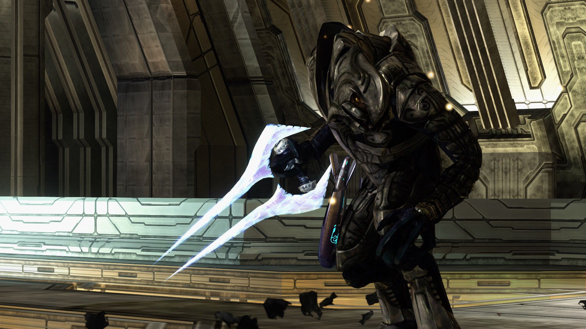
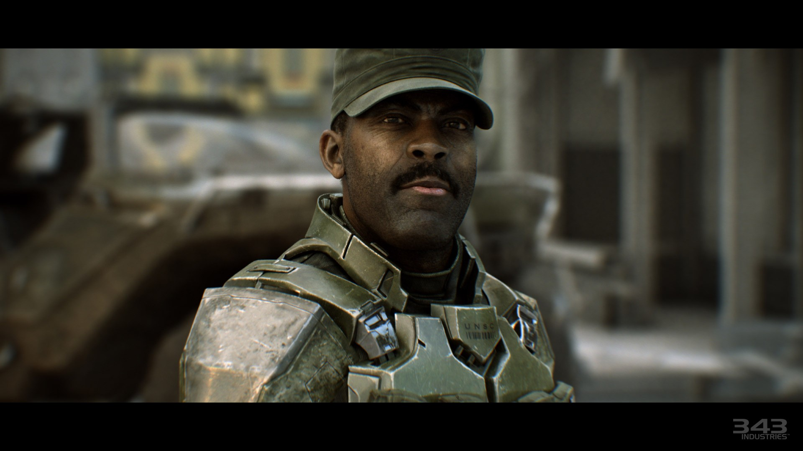
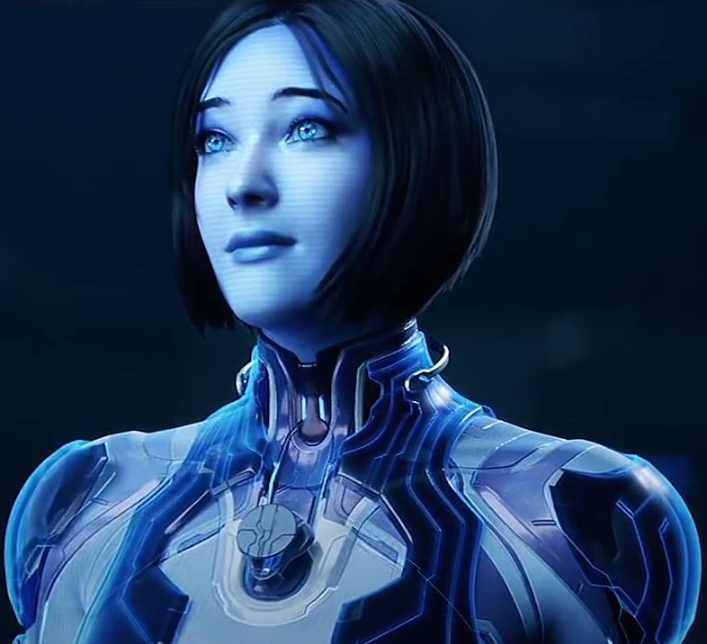

The main protagonist and player character. Master Chief is a SPARTAN-II supersoldier, humanity's ultimate weapon against the Covenant and the Flood. In this final chapter of the trilogy, he is defined by his singular, unwavering mission to "Finish the Fight." He acts as a quiet but unstoppable force, driven by three goals: stop the Prophet of Truth from firing the Halo rings, destroy the parasitic Flood once and for all, and fulfill his promise to rescue his AI companion, Cortana. His journey sees him make a monumental sacrifice, solidifying his legendary status
The Arbiter
The deuteragonist, or secondary protagonist, of the game. Formerly a high-ranking commander of the Covenant, the Arbiter now leads the Elites (Sangheili) in their rebellion against the Prophets. Having learned the truth about the Halo rings, he forges a powerful alliance with humanity and serves as Master Chief's constant ally on the battlefield. His personal motivation is to hunt down and kill the Prophet of Truth for his betrayal. He represents redemption and is instrumental in ending the war.
Sergeant Major Avery Johnson
A tough, cigar-chomping veteran Marine who has been with Master Chief since the beginning. He represents the unbreakable spirit and grit of the UNSC. He provides tactical support, battlefield command, and moral support throughout the campaign. His deep loyalty to the UNSC and his comrades leads to his capture and tragic death near the end of the game at the hands of the Forerunner monitor 343 Guilty Spark.
Cortana
Master Chief's brilliant and witty AI companion. While not physically present for most of the game, she is a central motivating force. At the start of Halo 3, she is held captive by the Flood's hive mind, the Gravemind. She intermittently contacts the Chief through cryptic messages, luring him to her rescue while battling the Gravemind's influence. Her recovery is not only a personal quest for the Chief but is also critical to the final plan to defeat the Flood.